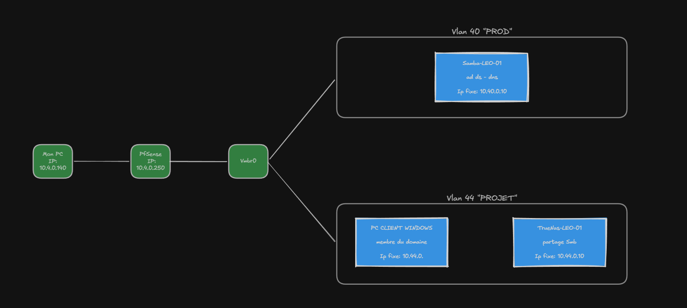
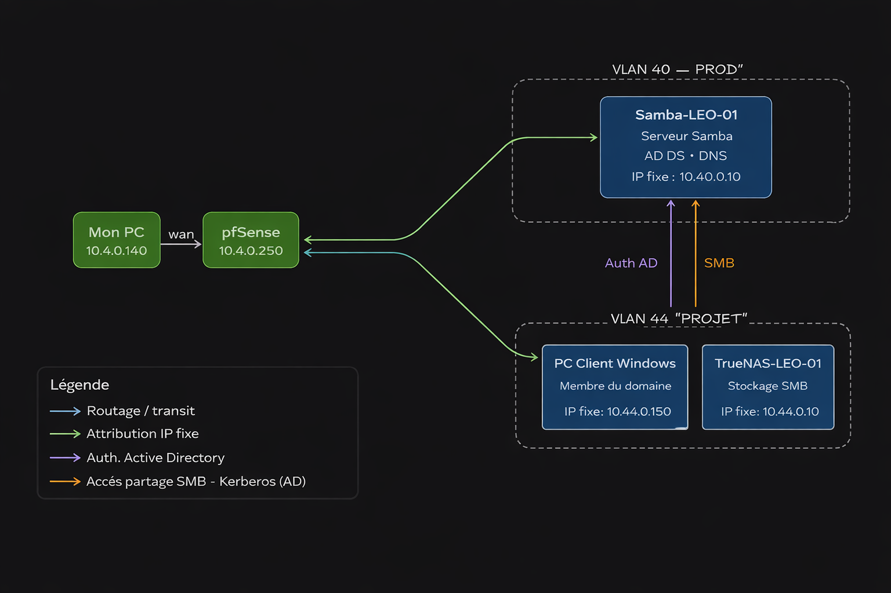
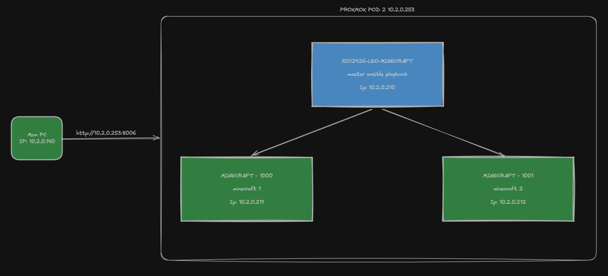
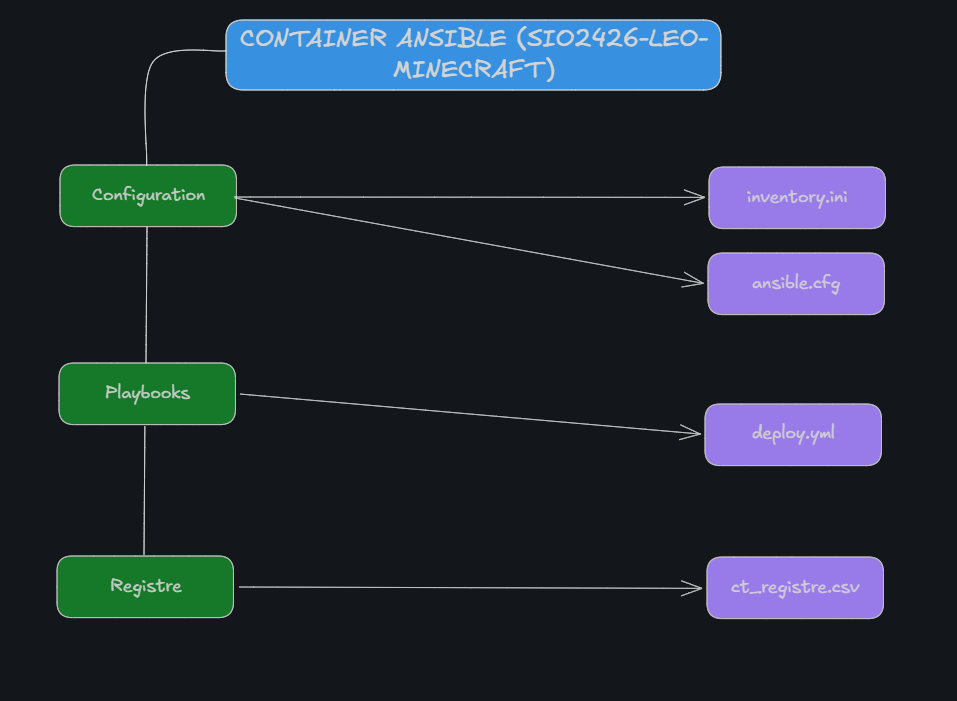
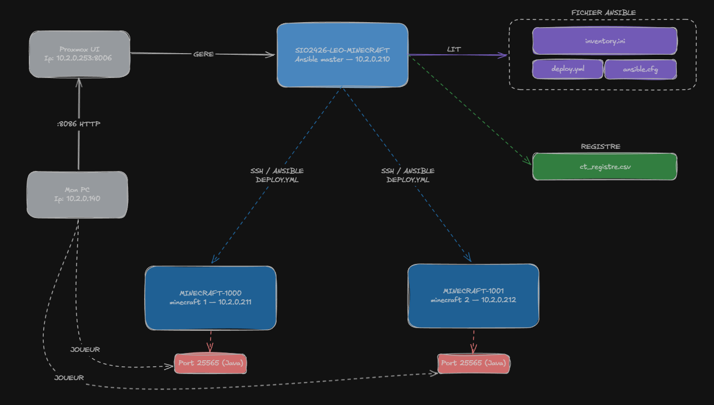

Technicien informatique en alternance, specialise en Solutions d'Infrastructure, Systemes et Reseaux.
Etudiant en BTS SIO option SISR a l'AFTEC (2024-2026), actuellement en alternance chez La Boutique Regeco en tant que technicien informatique. Titulaire d'un Bac pro Systeme Numerique (Lycee Charles Tellier, 2024).
J'interviens sur la reparation de materiels, le depannage, l'assistance utilisateur et la vente d'equipements. J'ai egalement effectue des stages chez Lecapitaine (service infrastructure) et Daltoner (service apres-vente).
BTS SIO — Session 2024-2026 — DECROIX Léo — N° candidat : 02541496689 — AFTEC — Option SISR
N'hesite pas a me contacter pour toute opportunite de stage, d'alternance, ou simplement pour echanger sur un projet technique.
Projets realises dans le cadre du BTS SIO SISR — competences E4 couvertes.
Ce projet a été réalisé dans un environnement virtualisé sous Proxmox, segmenté en deux VLANs distincts routés via pfSense. L'objectif était de déployer une infrastructure réseau complète intégrant un contrôleur de domaine, un serveur de fichiers partagés et un poste client Windows joint au domaine.
Le VLAN 40 "PROD" héberge le serveur Samba-LEO-01 (10.40.0.10), configuré en contrôleur de domaine Active Directory (AD DS) et serveur DNS. Le VLAN 44 "PROJET" accueille un PC client Windows membre du domaine ainsi que le serveur TrueNAS-LEO-01 (10.44.0.10), assurant le stockage centralisé via protocole SMB avec authentification Kerberos gérée par l'AD.
Ce projet a permis de valider la segmentation réseau par VLAN, la gestion des droits d'accès via Active Directory, et le déploiement d'un stockage partagé sécurisé dans une configuration proche des environnements professionnels.


Ce projet avait pour objectif d'automatiser le déploiement de serveurs de jeu Minecraft Java Edition dans un environnement de conteneurs Proxmox LXC, en utilisant Ansible comme outil d'orchestration. L'enjeu était de pouvoir provisionner un ou plusieurs serveurs de jeu identiques, de façon reproductible et sans intervention manuelle.
L'architecture repose sur un conteneur maître SIO2426-LEO-MINECRAFT (10.2.0.210) jouant le rôle d'Ansible master. Ce conteneur lit un ensemble de fichiers de configuration — inventory.ini, ansible.cfg, deploy.yml — et orchestre via SSH deux conteneurs cibles (MINECRAFT-1000 et MINECRAFT-1001) sur lesquels il installe Java, configure les paramètres mémoire et démarre automatiquement le serveur Minecraft sur le port 25565.
Un registre ct_registre.csv centralise les informations de chaque conteneur déployé. L'ensemble est hébergé sur un nœud Proxmox POD 2 (10.2.0.253), accessible depuis le PC local via l'interface web Proxmox en HTTP sur le port 8006.



Deux themes suivis via Feedly (agregateur RSS) dans le cadre du BTS SIO SISR.
Pour rester a jour sur mes deux themes de veille, j'utilise Feedly, un agregateur de flux RSS. Cet outil me permet de centraliser en un seul endroit les articles de plusieurs sources fiables, sans avoir a visiter chaque site manuellement. Je consulte mon feed plusieurs fois par semaine et je sauvegarde les articles pertinents pour les analyser.
Selectionner des sites specialises et fiables (IT Social, LeMagIT, OCDE...)
Ajouter les flux RSS pour recevoir automatiquement les nouveaux articles.
Lire les titres, selectionner et sauvegarder les articles pertinents.
Rediger une synthese et l'integrer au portfolio de veille.
L'IA designe des systemes capables d'apprendre a partir de donnees pour realiser des taches complexes. En entreprise, elle automatise les taches repetitives, aide a la prise de decision et personnalise les services clients.
En tant que futur technicien SISR, comprendre l'impact de l'IA sur les infrastructures IT est essentiel : nouveaux besoins en puissance de calcul, securite des donnees et gestion des systemes.
Le cloud computing designe l'acces a des ressources informatiques (serveurs, stockage, logiciels) via Internet, a la demande. On distingue trois modeles : IaaS, PaaS et SaaS.
Le cloud est au coeur des infrastructures des entreprises. En SISR, maitriser ces environnements est indispensable : administration, securite, virtualisation et hybridation sont des competences cles.